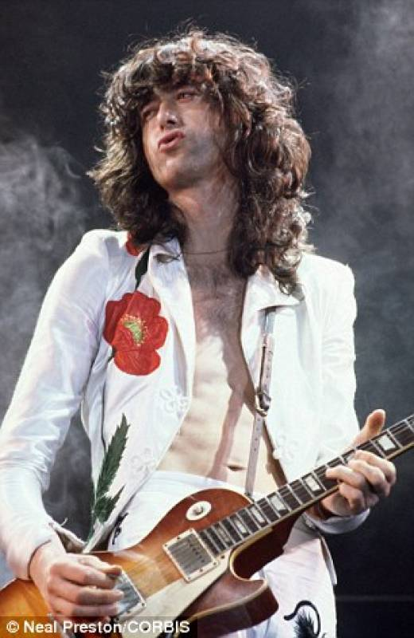

Fundador del grupo Led Zeppelin desde 1968 hasta su disolución en 1980. Es considerado uno de los más grandes, influyentes y versátiles músicos y guitarristas de todos los tiempos.
Está posicionado en el segundo lugar entre los mejores guitarristas de todos los tiempos por la Gibson Guitar Corporation y en el tercer lugar por la revistas Rolling Stone y Total Guitar. Su solo de guitarra en «Stairway to Heaven» esta considerado como el mejor en la historia del rock para Rolling Stone y Guitar World.
Ganador de dos Premios Grammy, Page tiene el honor de haber sido incluido dos veces al Salón de la Fama del Rock and roll. En 1992 lo hizo como miembro de los Yardbirds, mientras que en 1995 lo hizo con Led Zeppelin. En 2005, fue galardonado como miembro de la Orden del Imperio Británico por su labor de caridad en ayuda de las personas más desfavorecidas de Brasil.
